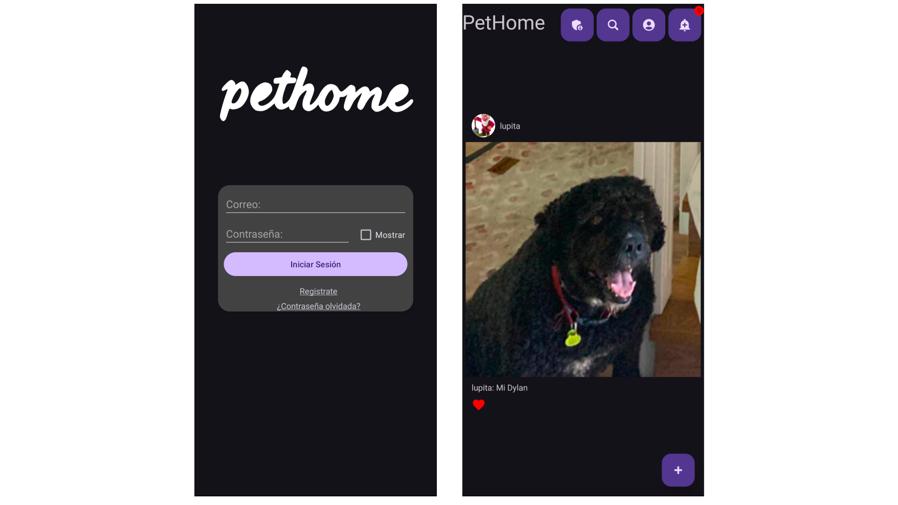

PetHome es una pequeña red social desarrollada en Android con el lenguaje nativo Kotlin. Desarrollada en solo tres meses, la app cuenta con diferentes funciones esenciales para una aplicación de carácter social, como un sistema de registro, inicio de sesión y recuperación de contraseña, la posibilidad de seguir a otros usuarios y obtener seguidores, visualización y publicación de fotos, un sistema de "Likes" y personalización de perfiles.
Aquí puedes incluir más detalles, como el proceso de desarrollo, las tecnologías utilizadas (por ejemplo, Android Studio, Firebase para la base de datos, etc.), los desafíos enfrentados durante el proyecto, o incluso enlaces a un demo o repositorio si está disponible.
